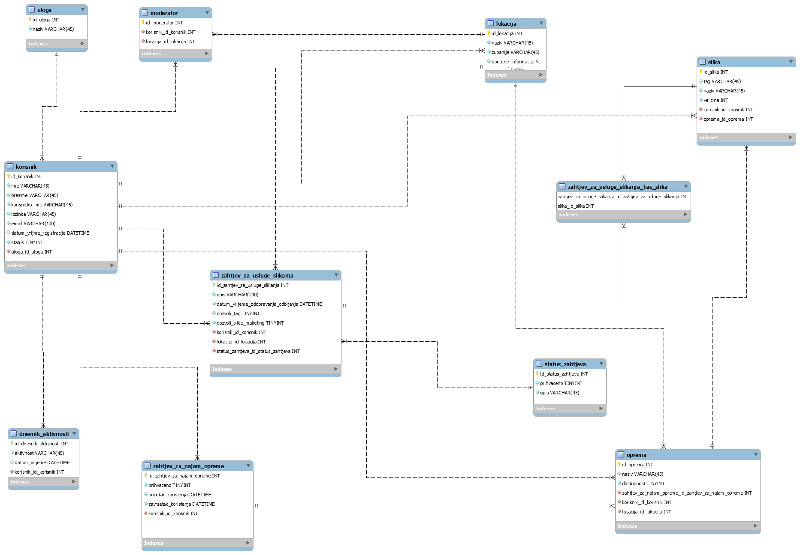
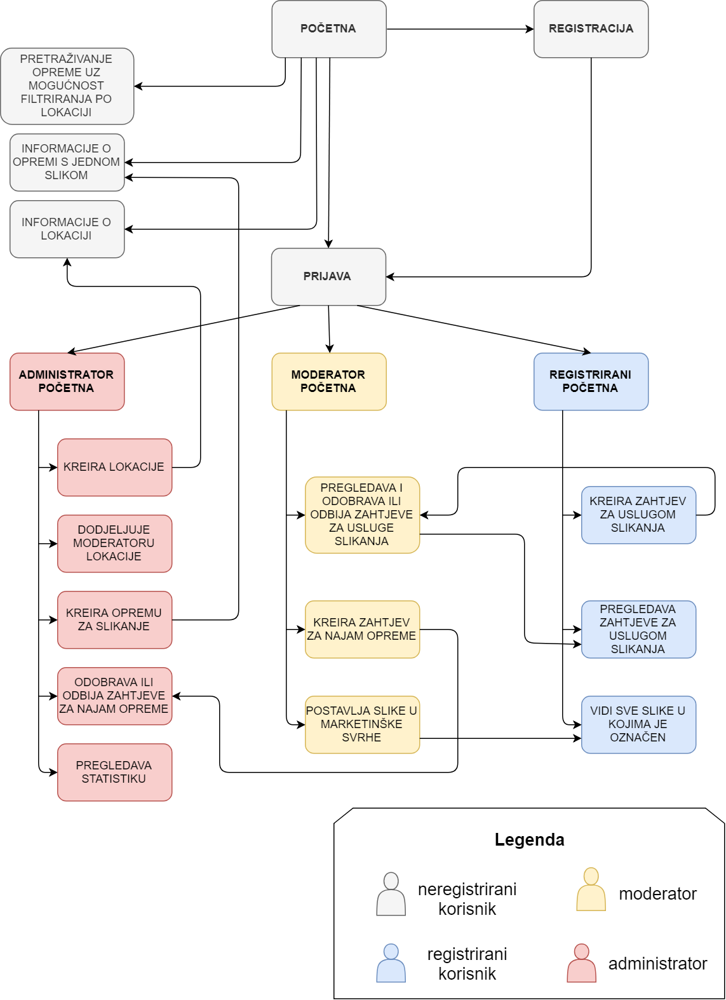

ERA model

Navigacijski dijagram
Opis projektnog zadatka: Projektni zadatak bio je napraviti web-aplikaciju koja omogućuje najam uređaja za usluge fotografiranja, označavanja korisnika i sl. Uloge koje su moguce su neregistrirani korisnik,
registrirani korisnik, moderator i administrator. Sto se tice uloga, bitno je napomenuti kako na navigacijskom dijagramu sve ovlasti i mogučnosti koje ima neregistrirani korisnik ima i registrirani. Slijedno tome,
sve sto može registrirani može i moderator i sve što može moderator može i administrator. Administrator ima najveće ovlasti i upravlja svime (vidi sve korisnike, dnevnik aktivnosti...). Što se tiče
neregistriranog korisnika, on u ovom projektnom zadatku fotografskih usluga može pretraživati opremu uz mogučnost filtriranja po lokaciji, s tim da su oprema i lokacija poveznice. Klikom na poveznicu
lokacije otvaraju se detalji o lokaciji, a klikom na link opreme otvaraju se informacije o opremi i jedna random slika slikana tom opremom. Registrirani korisnik kreira zahtjev za uslugom slikanja i odabire lokaciju i unosi kakvo
slikanje želi. U zahtjevu može i ne mora dopustiti korištenje slika u marketinške svrhe. Osim toga, registrirani korisnik pregledava zahtjeve za uslugom slikanja sa statusom i vidi slike u kojima je bio označen.
Moderator Pregledava gore navedene zahtjeve, kreira zahtjev za najmom opreme. On i postavlja slike u marketinške svrhe. Administrator ima najveće ovlasti. Kao što je ranije spomenuto,
on može kreirati lokacije i dodijeliti ih moderatoru, opremu za slikanje, odobrava ili odbija zahtjeve za najmom opreme, i pregledava statistiku. Administrator također može otključati i zaključati korisnika,
konfigurirati sustav, pregledavati dnevnik aktivnosti i dodjeljivati korisnicima ulogu moderatora.
Opis projektnog rješenja:Moje rješenje ovog projektnog zadatka ima oko 50 % riješenosti. Implementirane su funkcionalnosti: provjera da li postoji korisničko ime kod registracije s AJAX-om,
CAPTCHA provjera, 5 validacija s klijentske strane i 5 validacija na serverskoj strani. Sve te validacije moraju proći kako bi registracija bila uspješna. Nadalje, implementirana je funkcionalnost e-mail aktivacije s određenim rokom. On je u početku 7 sati, ali administrator
ga može promijeniti. Implementiran je također i .htaccess ispis korisnika. Što se tiče prijave, pamti se zadnje uspješno prijavljen korisnik i sprema se u kolačić i postavlja se u input za korisničko ime. Prijava je sigurna putem HTTPS-a.
Korisnik se može i uspješno odjaviti sa sustava. Također, implementirana je funkcionalnost da se nakon 3 neuspjela pokušaja prijave korisnik blokira i može ga odblokirati jedino administrator. Postoji i
funkcionalnost zaboravljene lozinke. Kada korisnik stisne na link i unese e-mail, na mail mu dođe nova lozinka. Što se tiče rada sustava, implementiran je pomak vremena (virtualno vrijeme), pretraživanje sa straničenjem
(datatables), postoji dnevnik aktivnosti koji administrator može pregledavati i pretraživati. Svaka promjena se unosi u dnevnik aktivnosti. Postoji kolačić s uvjetima korištenja na početku, ako prvi put
posjećujete stranicu. Postoji sortiranje kolona na tri tablice. Stranica je i prilagodljiva medijima(responzivna je). Većina programskog rješenja implementirana je AJAX-om. Što se tiče neregistriranog korisnika,
implementirani su pretraga i filtriranje po lokaciji i prikaz detaljnijih informacija klikom na lokaciju. Što se tiče administratora, implementirano je: otključavanje i blokiranje korisničkog računa, konfiguracija
sustava u kojem administrator mijenja npr. trajanje aktivacijskog linka ili broj neuspjelih pokušaja prijave. Administrator može i pregledavati i pretraživati dnevnik kako bi vidio koji korisnik
je što napravio u točno određeno vrijeme. Administrator može i dodijeljivati registriranim korisnicima ulogu moderatora te moderatorima dodijeljivati lokacije. Administrator također može kreirati opremu koja je na nekoj lokaciji.